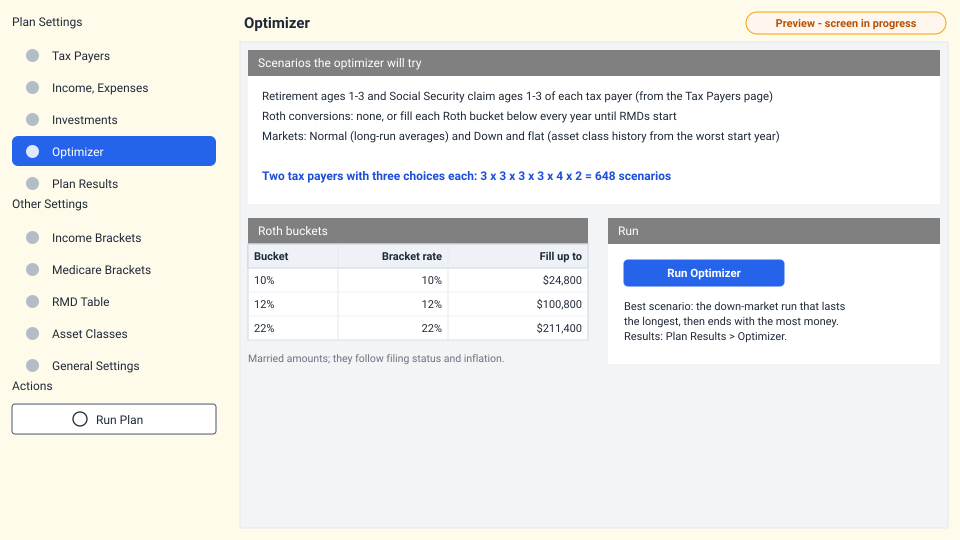
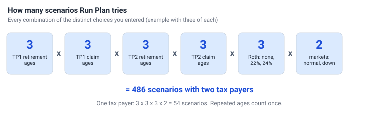

Optimizer Preview
Instead of guessing the best retirement age or when to claim Social Security, let the planner try them all. The optimizer runs your plan once for every combination of your choices, in both a normal and a down market.

What it varies

- Retirement ages - retirement ages 1, 2 and 3 of each tax payer, from the Tax Payers page.
- Social Security claim ages - claim ages 1, 2 and 3 of each tax payer.
- Roth conversions - none, or each of the Roth buckets (10%, 12% and 22% to start).
- Market - normal and down and flat.
A repeated age counts once, so entering 65, 65, 65 tests only 65. Everything else in the plan stays the same.
Milestone dates such as YORTP1 move with each scenario's retirement and claim ages.
How the best scenario is chosen
- Only down-market runs are compared, because a plan that survives a bad market will survive a normal one.
- The run whose money lasts to the latest year wins.
- If several last to the end of the plan, the one with the highest net asset value in the final year wins.
The best scenario gets full year-by-year results (cash flows, balances, tax forms). Every other scenario gets one summary row; you can calculate the full results of any of them when you want to look closer.
Reading the optimizer results
The results are on Plan Results > Optimizer, one row per scenario:
| Column | Meaning |
|---|---|
| Scenario | Scenario number (1, 2, 3...). |
| SS claim age / retirement age (each tax payer) | The ages used in this scenario. |
| Roth fill bucket | The bucket filled each year, or blank for no Roth conversions. |
| Market | Normal Market or Down and Flat Market. |
| End of plan year | The last year of the plan: the final life expectancy year, or the year the money ran out. |
| NAV | Net asset value (all accounts) at the end of that year. |
Running the optimizer again replaces the earlier optimizer results. The results of Run Plan are kept.